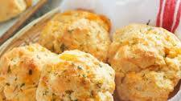

Cheddar Bay Biscuits Recipe
This recipe makes savory, buttery biscuits with that signature cheesy garlic flavor. These homemade cheddar bay biscuits are quick, fast, and fresh so enjoy them warm from the oven or for a snack the next day.
Ingredients
Biscuits
- 2 cups all-purpose flour
- 1 tablespoon baking powder
- 1 teaspoon granulated sugar
- ½ teaspoon garlic powder
- ¼ teaspoon baking soda
- ¼ teaspoon salt
- 1 cup milk more if needed
- &frac13 cup cold butter
- ¾ cup shredded cheddar cheese
Garlic Butter
Instructions
- Preheat the oven to 400°F
- Mix together flour, baking powder, sugar, garlic powder, baking soda, and salt.
- Add butter and mix with a pastry cutter or fork until crumbly and the butter pieces are about the size of peas.
- Stir in milk and cheddar cheese
- Drop dough by heaping spoonfuls onto a parchment lined pan
- Bake 12-15 minutes or until lightly browned.
- While biscuits are baking, combine melted butter, parsley, garlic powder, and Italian seasoning if using.
- Remove from oven and let cool 3 minutes.
- Brush warm biscuits with butter mixture and serve warm.